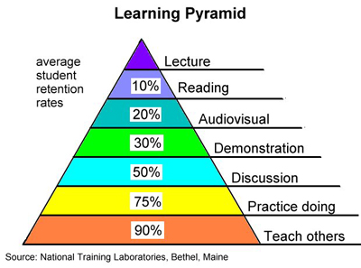

Teach Your Skills for Fun and Profit
November 10, 2015
An age old concept
What do Alton Brown, Tim Ferris, Bob Vila, and Ryan Bates all have in common? You guessed it, they all made a small (or large) fortune off teaching the skills of their trade. They weren’t teachers initially, they were just pretty good at what they did, and thought teaching others what they knew could be beneficial to all parties. And it was.
Teaching your skills at any level can sharpen them dramatically and make you a decent side income. Longer term you may find it makes you more than a decent side income, and teaching becomes a skill in itself.
It has never been a secret that teaching is a great way to learn. The ancient Roman philosopher Seneca stated that, “While we teach, we learn”, two millennia ago. European schools started to have some version of teaching assistants or student teachers around the end of the 18th century.
There have been more recent pedagogic techniques focused specifically on having students teach to learn based on research that teaching is, in fact, the best way to learn.

Gaining expertise
In his book “The 4-Hour Workweek,” Tim Ferris famously (and controversially) outlines how to be come an expert in anything in four weeks and six steps. Read the book if you want to know each step, but let me give you a hint: at least half of them involve teaching.
Think about the times you’ve had to give presentations. It’s likely that you started out methodically when you found out you were going to do it, only to find yourself scrambling the night before and doing it in a few hours college-thesis-style. But you still learned a ton! Certainly more than the people that you were presenting for.
Turns out, studies show that even being told you will have to teach a concept later improves learning and recall significantly. Maybe those of us with high willpower can trick ourselves into this, but I recommend actually putting yourself in a teaching situation to get the full effect.
Tricking ourselves
We trick ourselves all the time into thinking we are learning. It’s quite a conundrum - how can we have a full grasp of an idea when we don’t know what we don’t know?
As Richard Rusczyk says, “Teaching removes this possibility of self-deceit.” This happens both by us preemptively gathering more information and knowledge in anticipation of our student’s lack of understanding or questions, and also by being put on the spot by those which were not anticipated at the time of teaching.
Teaching also happens to be an excellent cure for an endemic of the tech world: Impostor Syndrome.
Start teaching when you start learning
In an earlier post, I laid out the steps I took in getting a job in my current field of web/software development. It is notable that quite early in the process, I was getting paid to teach people what I had been learning, almost in tandem. I recall my instructor at the bootcamp I was enrolled in mention something in passing about learning by teaching and I really took it to heart.
I started a gig as a personal tutor for a Computer Science grad student at UW in Ruby on Rails before finishing the course, and then was an assistant instructor for the following bootcamp after mine. I believe these two jobs were an early immunization for the impostor syndrome I may have had if I didn’t do them. It might have been a little too far on the ego boost, but thats another problem.
Point is, I started teaching for purely selfish reasons - make money, and get learnt. (sorry)
That’s not to say I haven’t had lots of rewarding experiences teaching what I do. I was surprised at the amount of attention my post on how I got my job was getting, and how many folks emailed me that it was an inspiration boost, or they got into a course they’ve been excited about, or they got their dream job, etc. Knowing you’ve helped someone achieve something is a sweet feeling.
And I guarantee I learned more than my audience just by writing that.
“I know that I know nothing”
Since then, I’ve started working as a mentor for Thinkful on the weekends. This, plus being the development lead of a team at my full time spot gives me plentiful teaching, and therefore learning, opportunities.
I am consistently stumped by questions my students and teammates ask me. Sometimes it feels good when they have an easy question that I’m well prepared for, but that is rarely the case. More often, I’ll have to look up pieces of answers and help them and myself connect the dots.
Surprise! Thats what I do in my real life job anyway!
So, if you’re a blossoming developer or recent grad that is stuck in the awful, seemingly infinite loop of, “I need experience to get a job to get experience so I can get a job,” like me and so many have been in the past, try your hand at teaching. Some good places to start would be TA-ing for some classes, private tutoring, or even just blogging.
Or, if you’ve got tons of experience and are feeling a bit stale on your skills or just plain bored, try teaching! Some good places to start could be assisting at a university, private teaching facility like bootcamps, blogging, or best of all, be a true mentor for someone.
A true mentorship experience is hard to find without contriving it, but I have had some unbelievable mentors in my life that have been far more influential than they know, and have shaped me and my character immensely. I strive to be that person for someone else someday, but I may not even know it if it happens.
Being a teacher implies mastery of the subject even though to be a decent teacher you must acknowledge that the more you know, the more you realize you know very little.
It’s usually humbling. It’s often lucrative. And it’s always going to be a better learning experience for you than your student.